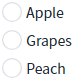
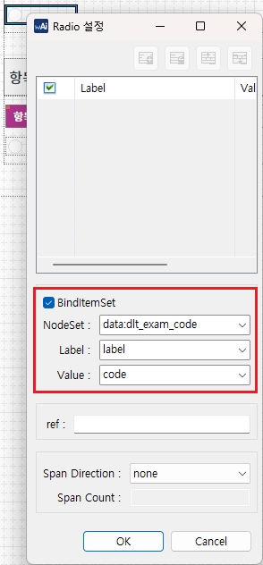
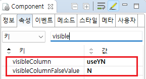

[Radio] 특정 항목 표시하지 않기
1개요
Radio의 특정 항목을 표시하지 않는 예제입니다. DataList와 Radio의 항목을 연결하여 설정할 수 있습니다.
2구현된 기능
모든 항목 표시
출력된 목록 중 특정 항목을 표시하지 않기 - 속성으로 설정
출력된 목록 중 특정 항목을 표시하지 않기 - 스크립트로 설정
3예제 테스트 방법
설정별로 구성된 컴포넌트의 목록은 하나의 DataList와 연결되어있습니다. 설정에 따라 출력된 목록을 비교합니다.
3.1모든 항목 표시
예제 영역 '(기본) 모든 항목 표시하기'에서 테스트합니다.1
실행 결과를 확인합니다.
모든 항목이 표시됩니다. 화면에 보여지는 항목은 "Apple", "Pear", "Grape", "Watermelon", "Peach"입니다.
Image 1.브라우저(Chrome) 실행 예시

3.2출력된 목록 중 특정 항목을 표시하지 않기 - 속성으로 설정
예제 영역 '항목 숨김 지정 - 속성'에서 테스트합니다.1
실행 결과를 확인합니다.
항목 "Pear", "Watermelon"이 숨겨지고, "Apple", "Grape", "Peach"가 표시됩니다.
Image 2.브라우저(Chrome) 실행 예시

3.3출력된 목록 중 특정 항목을 표시하지 않기 - 스크립트로 설정
예제 영역 '항목 숨김 지정 - 스크립트'에서 테스트합니다.1
STEP 1: 출력된 목록을 확인합니다.
모든 항목이 표시됩니다. 화면에 보여지는 항목은 "Apple", "Pear", "Grape", "Watermelon", "Peach"입니다.
Image 3.브라우저(Chrome) 실행 예시
2
STEP 2: '항목 숨기기' 버튼을 클릭합니다.
3
STEP 3: 실행 결과를 확인합니다.
항목 "Pear", "Watermelon"이 숨겨지고, "Apple", "Grape", "Peach"가 표시됩니다.
Image 4.브라우저(Chrome) 실행 예시
4구현 예시
이 기능은 컴포넌의 목록이 DataList와 연결되어야 사용할 수 있는 기능입니다.
4.1[필수][공통]DataList 정의하기
컴포넌트의 목록과 연결할 DataList를 정의합니다.
DataList를 생성하고 ID를 'dlt_exam_code'로 할당합니다. 필수로 정의될 컬럼은 3가지로 아래와 같습니다. 컬럼의 ID는 환경에 맞게 정의할 수 있습니다.
label : 화면에 출력할 레이블
code : 화면에 출력할 레이블의 값
useYN : 항목의 표시 여부 조건의 값
(visibleColumn 속성에 지정할 컬럼입니다. 이 컬럼의 값이 visibleColumnFalseValue 속성에 정의한 값과 동일한 경우 해당 항목은 숨겨집니다.)
Image 5.웹스퀘어 스튜디오의 데이터컬렉션 설정 예시 1

생성한 DataList에서 사용할 데이터를 할당합니다. 예제에서는 화면이 로딩된 시점(scwin.onpageload)에 데이터를 할당하고 있습니다. 숨길 항목은 'useYN' 컬럼에 'N'을 정의합니다.
Example 1.Script
scwin.onpageload = function() { //DataList dlt_exam_code에 데이터 할당 dlt_exam_code.setJSON([ {"label":"Apple","code":"01","useYN":"Y"}, {"label":"Pear","code":"02","useYN":"N"}, {"label":"Grapes","code":"03","useYN":"Y"}, {"label":"Watermelon","code":"04","useYN":"N"}, {"label":"Peach","code":"05","useYN":"Y"} ]); };
4.2[필수][공통] 컴포넌트의 목록과 DataList 연결하기
스튜디오의 디자인 탭에서 컴포넌트를 더블 클릭하여 목록과 DataList를 연결합니다. (아래의 이미지를 참고하여 설정합니다)
Image 6.웹스퀘어 스튜디오의 '디자인' 탭 - 목록과 DataList 연결 예시

4.3컴포넌트에 숨길 항목 설정하기 - 속성
1
속성을 설정합니다.
[필수] visibleColumn="useYN"
DataList에 정의한 컬럼의 ID
[필수] visibleColumnFalseValue="N"
숨길 항목의 조건+ 값이 여러개인 경우 , 로 구분하여 정의합니다. 이 컬럼에 아무런 값을 정의하지 않은 경우 기본 값은 0, false, FALSE, F 입니다.
Image 7.웹스퀘어 스튜디오의 Component View 예시

Example 2.Source
<!-- radio의 소스 본문 예시 --> <xf:select1 visibleColumn="useYN" visibleColumnFalseValue="N" id="rad_exam2"> <xf:choices> <xf:itemset nodeset="data:dlt_exam_code"> <xf:label ref="label"></xf:label> <xf:value ref="code"></xf:value> </xf:itemset> </xf:choices> </xf:select1>
4.4컴포넌트에 숨길 항목 설정하기 - 스크립트
메소드 'setVisibleColumn'을 사용하여 설정합니다.
Example 3.Script
//예제 파일의 스크립트 "scwin.btn_ex1_onclick"에 작성되어 있습니다. //Radio [rad_exam3]의 숨길 항목의 컬럼과 조건값 설정 //항목 숨기기 컬럼 및 숨기기 값 설정 - 목록과 연결된 DataList의 "useYN" 컬럼의 값이 "N"인 경우 항목을 숨깁니다. rad_exam3.setVisibleColumn("useYN", "N"); //조건의 값이 여러개 인 경우 ,로 구분합니다. //목록과 연결된 DataList의 "useYN" 컬럼의 값이 "N" 또는 "Y" 인 경우 숨겨집니다. //rad_exam3.setVisibleColumn("useYN", "N,Y");
5주요 API
visibleColumn
visibleColumnFalseValue
setVisibleColumn( columnId , visibleColumnFalseValue )